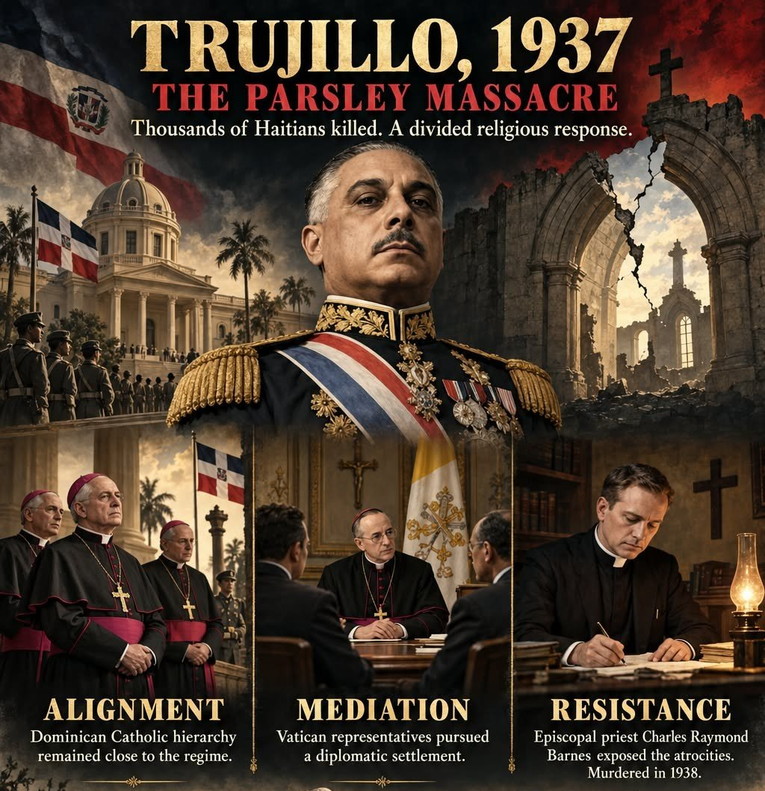

The Parsley Massacre and the Prayer Service: What Happens When Faith Gets Too Close to Power
In October 1937, Dominican dictator Rafael Trujillo sent soldiers after Haitians living along the border. In about a week, thousands of men, women and children were killed.
No one knows the exact number. The most common estimate is around 20,000, and some put it higher. Soldiers reportedly used a sprig of parsley to decide who lived. If you couldn’t say “perejil” the Dominican way, you were marked as Haitian.
That’s the history. The new episode of The Jane and Bob Show is about something harder to sit with.
The irony at the center
Trujillo had Haitian ancestry himself. The man who ordered people killed for their heritage shared that heritage. Some of the dead may even have been his own relatives.
That tells you how this kind of hatred works under a dictator. It isn’t really about blood. It’s about power. The fastest way to build an “us” is to invent a “them,” and the line gets drawn wherever the man in charge needs it.
The prayer service
The episode is built on a piece by writer Anthony J. called “Trujillo 1937.” Anthony points out that while the killings were happening, church leaders held a prayer service for Trujillo, asking that he stay in power. Then he asks a blunt question: does that make those Christians an accessory to genocide?
The episode pushes back on that. Priests in a sanctuary aren’t soldiers with rifles. But Anthony’s point is about legitimacy. A dictator runs on force, but he also needs people to believe he’s blessed. When the most trusted institution in the country publicly prays for him, it tells the soldiers, the public and the dictator himself that it’s all okay.

Not every clergyman stayed quiet. Charles Raymond Barnes, an Episcopal priest in Santo Domingo, wrote down what was happening, hoping outside pressure would stop it. In July 1938 he was shot to death in his home. That’s the cost of speaking up, and part of why so many didn’t.
“I hate evil”
The part that stuck with me most is Anthony saying he cringes when people casually say “I hate evil.” His point is that most of us hate evil right up until it serves a cause we believe in, or until we find a verse, a rule or a precedent that lets us excuse it.
Then he turns the church’s own scripture back on it. Break one part of the law and you’ve broken all of it. You don’t get to bless the politician and pretend you didn’t bless the massacre.
Why it still matters
The people praying for Trujillo in 1937 didn’t think they were villains. They thought they were protecting their church and their country.
So here’s my question for you: what “noble cause” today might future generations look back on and say we were blind to the human cost?